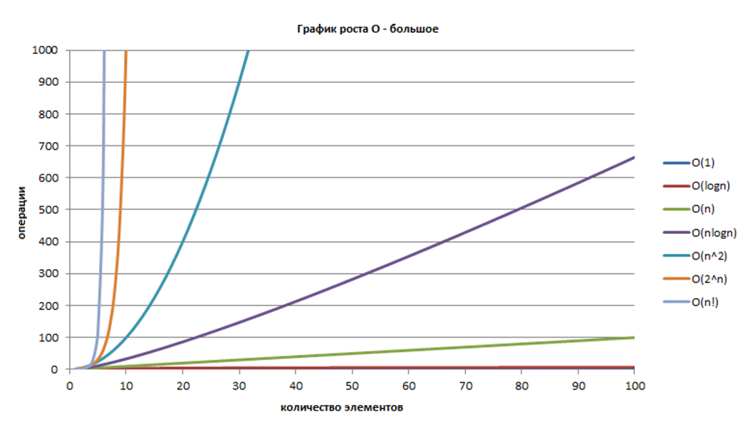
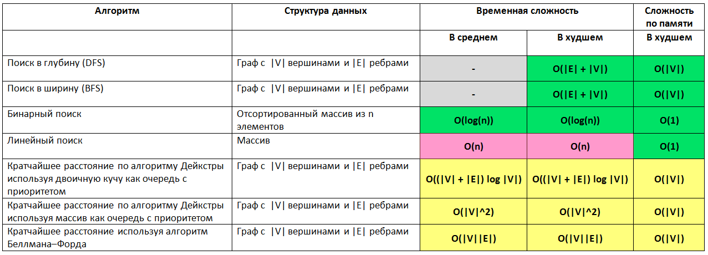
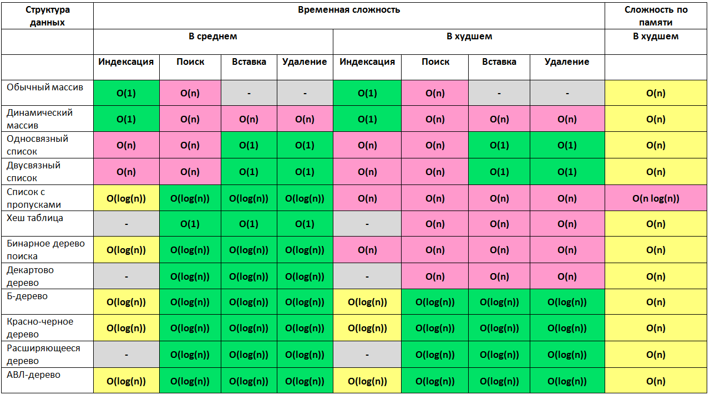
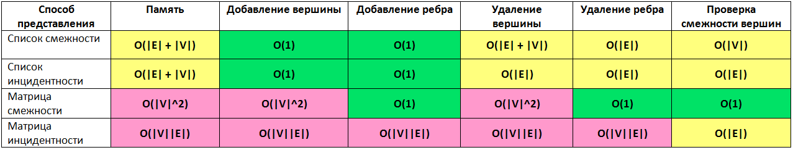
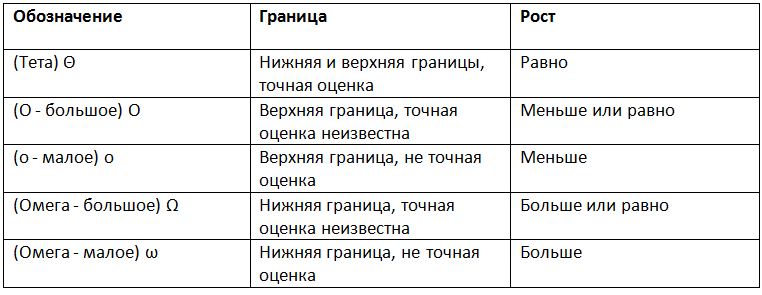

Алгоритмы¶
Во время своей работы программы используют различные структуры данных и алгоритмы, в связи с чем обладают разной эффективностью и скоростью решения задачи. Дать оценку оптимальности решения, реализованного в программе, поможет понятие вычислительной сложности алгоритмов.
Основные понятния¶
Вычислительная сложность (алгоритмическая сложность) - понятие, обозначающее функцию зависимости объема работы алгоритма от размера обрабатываемых данных.
Вычислительная сложность пытается ответить на центральный вопрос разработки алгоритмов: как изменится время исполнения и объем занятой памяти в зависимости от размера входных данных?. С помощью вычислительной сложности также появляется возможность классификации алгоритмов согласно их производительности.
В качестве показателей вычислительной сложности алгоритма выступают:
-
Временная сложность (время выполнения).
Временная сложность алгоритма - это функция от размера входных данных, равная количеству элементарных операций, проделываемых алгоритмом для решения экземпляра задачи указанного размера.
Временная сложность алгоритма зачастую может быть определена точно, однако в большинстве случаев искать точное ее значение бессмысленно, т.к. работа алгоритма зависит от ряда факторов, например, скорости процессора, набора его инструкций и т.д.
-
Асимптотическая сложность.
Асимптотическая сложность оценивает сложность работы алгоритма с использованием асимптотического анализа.
Алгоритм с меньшей асимптотической сложностью является более эффективным для всех входных данных.
Асимптотические нотации¶
Асимптотическая сложность алгоритма описывается соответствующей нотацией:
-
О-нотация, O («О»-большое): описывает верхнюю границу времени (время выполнения «не более, чем…»);
-
Омега-нотация, Ω («Омега»-большое): описывает нижнюю границу времени (время выполнения «не менее, чем…»).
Например,
говорит о том, что алгоритм имеет квадратичное время выполнения относительно размера входных данных в качестве верхней оценки («О большое от эн квадрат»).
Каждая оценка при этом может быть:
- наилучшая: минимальная временная оценка;
- наихудшая: максимальная временная оценка;
- средняя: средняя временная оценка.
При оценке, как правило, указывается наихудшая оценка.
Примечание
Допустим, имеется задача поиска элемента в массиве. При полном переборе слева направо:
- наилучшая оценка: O(1), если искомый элемент окажется в начале списка;
- наихудшая оценка: O(𝑁), если искомый элемент окажется в конце списка;
- средняя оценка:
Верхняя оценка и O-нотация¶
Наиболее часто используемой оценкой сложности алгоритма является верхняя (наихудшая) оценка, которая обычно выражается с использованием нотации O-большое.
Выделяют следующие основные категории алгоритмической сложности в O-нотации:
-
Постоянное время: O(1).
- Время выполнения не зависит от количества элементов во входном наборе данных.
- Пример: операции присваивания, сложения, взятия элемента списка по индексу и др.
-
Линейное время: O(𝑁).
- Время выполнения пропорционально количеству элементов в коллекции.
- Пример: найти имя в телефонной книге простым перелистыванием и т.д.
-
Логарифмическое время: O(log𝑁).
- Время выполнения пропорционально логарифму от количества элементов в коллекции.
- Пример: найти имя в телефонной книге (используя двоичный поиск).
-
Линейно-логарифмическое время: O(𝑁log𝑁).
- Время выполнения больше чем, линейное, но меньше квадратичного.
- Пример: обработка 𝑁 телефонных справочников двоичным поиском.
-
Квадратичное время: O(𝑁2).
- Время выполнения пропорционально квадрату количества элементов в коллекции.
- Пример: вложенные циклы (сортировка, перебор делителей и т.д.).
На рисунке ниже приведён график роста O-большое.

Оценка сложности алгоритмов¶
Для оценки вычислительной сложности алгоритмов необходимо знать и учитывать сложности:
- используемых структур данных;
- совокупности различных операций.
Операции над структурами данных¶
В Python имеются коллекции (структуры данных), операции над которыми имеют определенную сложность.
Список и кортеж¶
Большинство операций со списком/кортежем имеют сложность O(𝑁).
| Операция | Сложность | Примечание |
|---|---|---|
len(lst) |
O(1) | |
lst.append(5) |
O(1) | |
lst.pop() |
O(1) | Аналогично lst.pop(-1) |
lst.clear() |
O(1) | Аналогично lst = [] |
lst[a:b] |
O(b - a) | |
lst.extend(...) |
O(len(...)) | Зависит от длины аргумента |
list(...) |
O(len(...)) | Зависит от длины аргумента |
lst1 == lst2 |
O(𝑁) | |
lst[a:b] == ... |
O(𝑁) | |
del lst[i] |
O(𝑁) | |
lst.remove(...) |
O(𝑁) | |
x in/not in lst |
O(𝑁) | Поиск в списке |
lst.copy() |
O(𝑁) | Аналогично lst[:] |
lst.pop(i) |
O(𝑁) | |
min(lst)/max(lst) |
O(𝑁) | |
lst.reverse() |
O(𝑁) | |
for item in lst |
O(𝑁) | |
[item for item in lst] |
O(𝑁) | |
lst.sort() |
O(𝑁 log𝑁) | Направление сортировки не играет роли |
k * lst |
O(k * N) |
Множество¶
По сравнению со списком/кортежем множества большую часть операций выполняют со сложностью O(1).
| Операция | Сложность | Примечание |
|---|---|---|
len(s) |
O(1) | |
s.add(5) |
O(1) | |
x in/not in s |
O(1) | В отличие от списка, где O(N) |
s.remove(5) |
O(1) | В отличие от списка, где O(N) |
s.discard(5) |
O(1) | |
s.pop(i) |
O(1) | В отличие от списка, где O(N) |
s.clear() |
O(1) | Аналогично s = set() |
set(...) |
O(len(...)) | Зависит от длины аргумента |
s != t |
O(len(s)) | |
s <= t |
O(len(s)) | |
s => t |
O(len(t)) | |
s | t |
O(len(s) + len(t)) | |
s & t |
O(len(s) + len(t)) | |
s - t |
O(len(s) + len(t)) | |
s ^ t |
O(len(s) + len(t)) | |
for item in s: |
O(N) | |
{item for item in s} |
O(N) | |
s.copy() |
O(N) |
Словарь¶
Большинство операций словарей имеет сложность O(1).
| Операция | Сложность | Примечание |
|---|---|---|
d[k] |
O(1) | |
d[k] = v |
O(1) | |
len(d) |
O(1) | |
del d[k] |
O(1) | |
d.pop(k) |
O(1) | |
d.popitem() |
O(1) | |
d.clear() |
O(1) | Аналогично d = {} или d = dict() |
d.keys() |
O(1) | |
dict(...) |
O(len(...)) | Зависит от длины аргумента |
for k in d: |
O(N) | Для всех методов: keys(), values(), items() |
{k: v for k, v in d.items() |
O(N) |
Примечание
Важно выбирать структуру данных, которая была бы оптимальной для конкретной задачи.
Например, если приложения будет осуществлять частый поиск информации, словарь даст большую эффективность, при этом, если необходимо просто хранить упорядоченный набор данных - словарь или кортеж подойдут лучше.
Закон сложения и умножения для O-нотации¶
Для оценки сложности совокупности операций используются законы сложения и умножения.
-
Закон сложения: итоговая сложность двух последовательных действий равна сумме их сложностей:
Особенности:
- итоговая сложность алгоритма оценивается наихудшим из слагаемых:
- в итоговой сложности константы отбрасываются
- при ветвлении берется наихудший вариант
if test: # O(t) block 1 # O(b1) else: block 2 # O(b2)
-
Закон умножения: итоговая сложность двух вложенных действий равна произведению их сложностей:
# Общая O(N^2) for i in range(N): # O(N) for j in range(N): # O(N)
Шпагралка по асимптотической сложности алгоритмов¶

Поиск¶

Сортировка¶

Структуры данных¶

Кучи¶

Представление графов¶
Пусть дан граф с |V| вершинами и |E| ребрами, тогда

Нотация асимптотического роста¶

- (О — большое) — верхняя граница, в то время как (Омега — большое) — нижняя граница. Тета требует как (О — большое), так и (Омега — большое), поэтому она является точной оценкой (она должна быть ограничена как сверху, так и снизу). К примеру, алгоритм требующий Ω(N LogN) требует не менее N LogN времени, но верхняя граница не известна. Алгоритм требующий O(N LogN) предпочтительнее потому, что он требует не менее N LogN (Ω(N LogN)) и не более чем N LogN (O(n logn)).
- f(x)=O(g(n)) означает, что f растет так же как и g когда n стремится к бесконечности. Другими словами, скорость роста f(x) асимптотически пропорциональна скорости роста g(n).
- f(x)=O(g(n)). Здесь темпы роста не быстрее, чем g(n). O большое является наиболее полезной, поскольку представляет наихудший случай.
Практикум¶
Задачи на определение сложности алгоритмов.